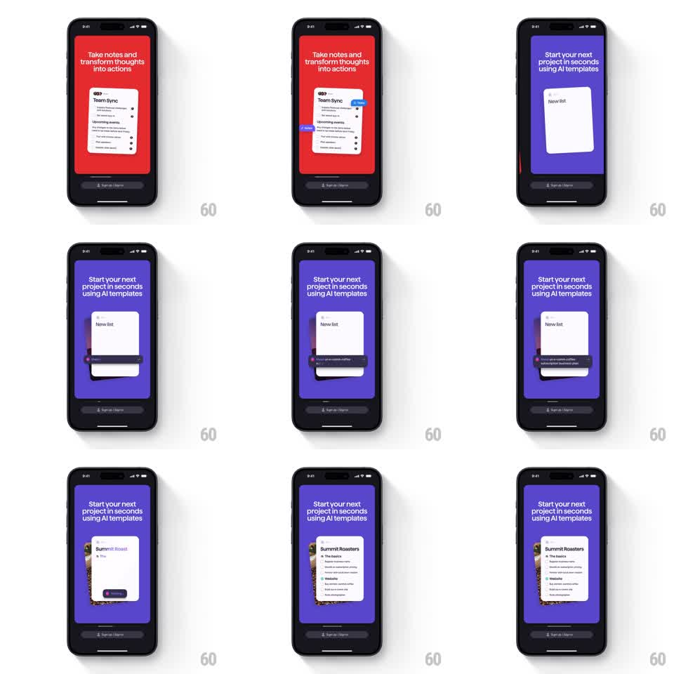

Media
Frame-by-frame

Rebuild this animation 1:1: Superlist's AI-templates onboarding - a prompt bar types a request, the New list card morphs as the AI works, and a fully structured "Summit Roasters" list staggers into existence.

Rebuild this animation 1:1: Superlist's AI-templates onboarding - a prompt bar types a request, the New list card morphs as the AI works, and a fully structured "Summit Roasters" list staggers into existence.
## Integration
Integration: stack-agnostic spec - springs given as stiffness/damping, timed motions as duration + curve; map every value to your framework and animation library of choice.
## Scene
Purple panel with the headline "Start your next project in seconds using AI templates" and a white card at center. The card starts as an empty "New list", a dark prompt bar slides up over it and types "Help me create a plan to launch my coffee business", then the card morphs into a generated list: cover thumbnail, "Summit Roasters" title, and sections ("The basics", "Website") with task rows.
## Motion spec
Pattern: auto-typed prompt with a card morph and staggered task reveal.
- The prompt bar rises from the card's bottom edge (spring ~320/26) and types its text character by character (~45ms/char, slight rhythm variance).
- On "send", the bar collapses (height -> 0, 250ms) and the card pulses once (scale 1 -> 1.02 -> 1, 300ms) with a shimmer sweep across it (600ms gradient slide).
- The card then morphs: a cover thumbnail slides in at top (spring ~300/24), the title types in ("Summit Roasters", 40ms/char), and section headers with their task rows stagger in from the top (fade + rise 10pt, 220ms each, 90ms apart).
- The card grows vertically as content arrives (height spring ~300/28), never jumping.
## Calibration
- Typing has human rhythm - small pauses after spaces, not a metronome.
- The shimmer reads as "AI working": one sweep, then content arrives.
## Reduced motion
Prompt text appears whole; list content fades in as one block (300ms).
## Don't miss
- The generated list is structured (sections with headers), not a flat dump of rows.
- The card stays centered and fixed-width through the whole morph.